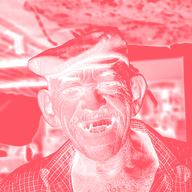

Luma-Stempel

Verwandelt die Ebene in eine Volltonfarbe, deren Deckkraft der Helligkeit jedes Pixels folgt, wie bei einem Stempel oder einer Schablone.
Einstellungen
| Einstellung | Typ | Bereich | Standard |
|---|---|---|---|
| Farbe | Farbe | – | #FF5566 |
| Schwarzpunkt | Zahl | 0 bis 1 | 0.1 |
| Weißpunkt | Zahl | 0 bis 1 | 0.6 |
| Gamma | Zahl | 0.1 bis 10 | 1 |
| Invertieren | Ein oder aus | – | Aus |